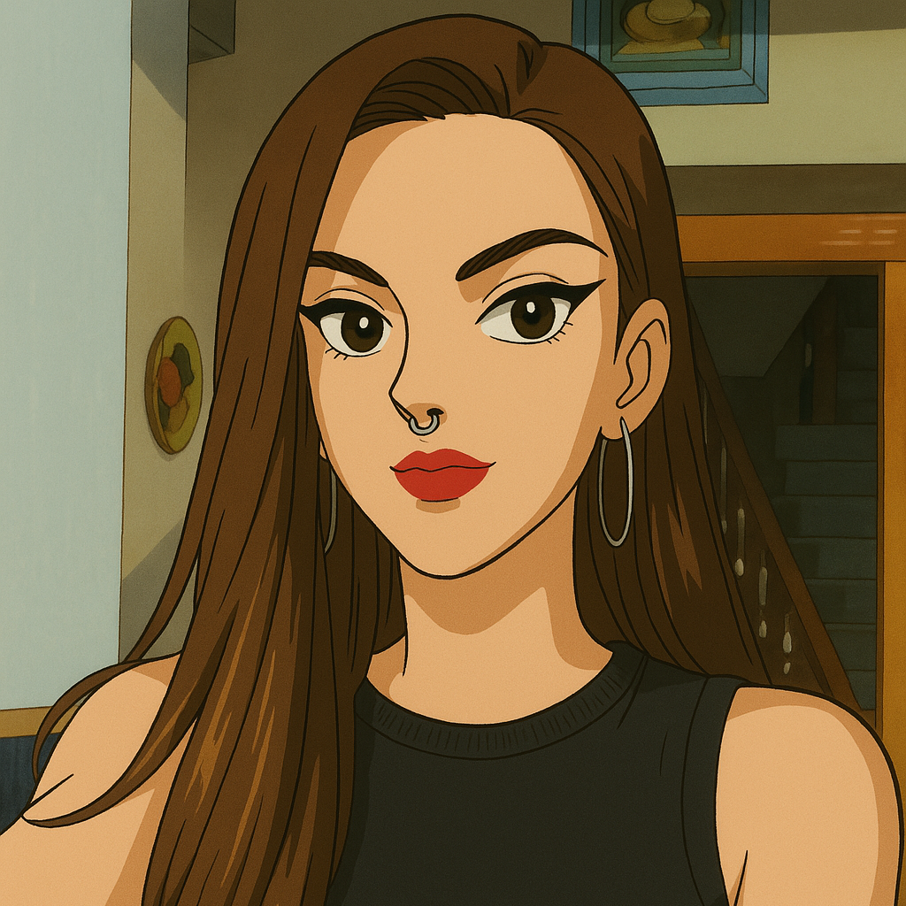

María Morillo Maqueda

Transformaciones (CSS - TF)
Transiciones (CSS - TS)
Animaciones CSS (CSS)
Animaciones Canvas (Canvas)
Animaciones SVG (SVG)
Transformaciones y transiciones
Escalado
Desplazamiento
Rotación
7
Animaciones CSS
7
2
¡CARAMBOLA!
Reanudar
Parar
Animaciones Canvas
Iniciar Animación
Animaciones SVG
Jugada 12